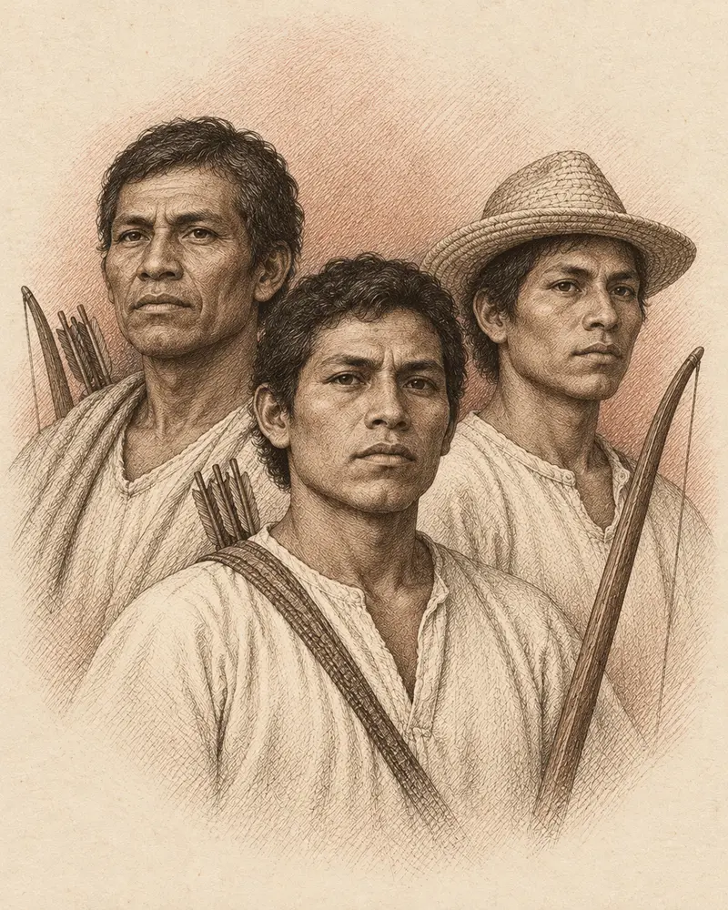

Combatientes indígenas · Contingente indígena
Flecheros de Matagalpa
Una memoria colectiva

Los flecheros provenientes de Matagalpa forman parte esencial de la memoria de San Jacinto. El relato más difundido habla de un contingente de 60 hombres que llegó a la hacienda antes del combate, al mando de Francisco Sacasa.
Su presencia recuerda que la defensa de Nicaragua involucró a pueblos indígenas, cuyos nombres individuales no siempre quedaron registrados. El reconocimiento de los flecheros como héroes nacionales amplió la mirada sobre los protagonistas.
Las fuentes no describen del mismo modo su participación ni las cifras de las fuerzas. Leer esas diferencias permite valorar la investigación sin reducir la historia a una única versión.